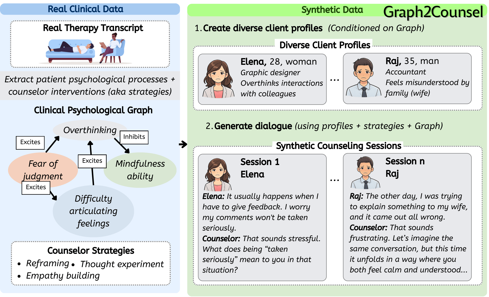

Graph2Counsel: Clinically Grounded Synthetic Counseling Dialogue Generation from Client Psychological Graphs
A framework for generating clinically grounded synthetic counseling dialogues from structured client psychological graphs, enabling privacy-preserving training data for mental health AI.